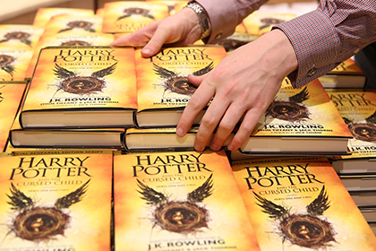

Harry Potter
На этой страничке вы найдете все о Гарри Поттере и волшебном мире...

Начнем с главных персонажей:
Студенты
- Гарри Поттер - главный герой серии книг и фильмов. Мальчик-Который-Выжил.
- Рон Уизли - лучший друг Гарри Поттера.
- Гермиона Грейнджер - лучшая подруга Гарри Поттера. Студентка Гриффиндора.
Ее родители были маглами. Гермиона очень любит читать книги и учиться.
Преподаватели
- Альбус Дамблдор - директор Хогвартса. Сильнейший светлый маг.
- Ремус Люпин - преподаватель Защиты от темных искусств в третьей книге.
Один из Мародёров, однокурсник Джеймса Поттера, Сириуса Блэка и Питера Петтигрю.
В школьные годы носил прозвище Лунатик.
- Северус Снейп - преподаватель зельеварения в Хогвартсе. Декан факультета Слизерин.
Шпион Дамблдора при Волдеморте.
Ах да, забыли рассказать самое главное.. Вдруг Вы еще не знаете.
Серия фильмов о Гарри Поттере основаны на книгах английской писательницы Дж. К. Роулинг.
Серия выпущена компанией Warner Bros.

Были экранизированы просто бомбические фильмы. Вот в таком порядке:
- Гарри Поттер и философский камень
- Гарри Поттер и Тайная комната
- Гарри Поттер и узник Азкабана
- Гарри Поттер и Кубок огня
- Гарри Поттер и Орден Феникса
- Гарри Поттер и Принц-полукровка
- Гарри Поттер и Дары Смерти. Часть 1
- Гарри Поттер и Дары Смерти. Часть 2
Посмотреть их можете здесь:
Посмотреть киношку